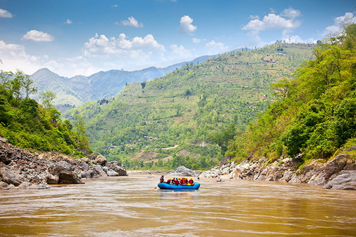

The Cliff of the Devil: Get ready for an unforgettable rafting adventure through one of nature’s most thrilling landscapes! The Cliff of the Devil offers an exciting experience for adventure lovers, combining the rush of navigating powerful river currents with the breathtaking beauty of towering cliffs and lush tropical surroundings. During this trip, you will have the opportunity to challenge yourself, enjoy the refreshing waters, and admire spectacular views that make every moment worthwhile. Guided by experienced rafting professionals, you will learn essential safety techniques and work together with your group to navigate the river. Whether you are seeking an adrenaline-filled activity or simply want to connect with nature, this adventure promises excitement, laughter, and unforgettable memories. Bring your adventurous spirit, prepare to get wet, and discover the incredible beauty of the outdoors on a journey you will never forget!
The Shrek's Swamp: Get ready to dive into a wild rafting adventure where nature, excitement, and a touch of magic come together! The Shrek’s Swamp takes you on an unforgettable journey through lush tropical landscapes, refreshing river waters, and beautiful natural surroundings that feel straight out of a fairy tale. As you navigate the river’s twists and turns, you will experience the thrill of rafting while enjoying the peaceful beauty of the wilderness. Whether you are paddling through exciting currents, laughing with your teammates, or taking in the spectacular scenery, every moment offers something special. Guided by experienced rafting professionals, you will learn important safety techniques and discover the fun of working together as a team. Perfect for adventure seekers and nature lovers alike, this trip promises splashes, laughter, and memories worth sharing. Grab your paddle, embrace your wild side, and get ready for an adventure worthy of an ogre!


The Original: Get ready to experience the true spirit of rafting with an adventure that brings together adrenaline, teamwork, and the breathtaking beauty of nature! The Original is the perfect trip for those who want to discover the excitement of navigating a river while enjoying the stunning landscapes that surround them. As you paddle through flowing waters, tackle exciting rapids, and explore the river’s natural wonders, every moment becomes an opportunity to create unforgettable memories. Whether you are an experienced adventurer or trying rafting for the first time, this experience offers the perfect balance of excitement, fun, and connection with nature. Along the way, you will work together with your team, enjoy refreshing splashes, and embrace the thrill of the unexpected. With professional guidance and essential safety instructions, you can focus on enjoying every second of the journey. Bring your adventurous spirit, grab your paddle, and discover why The Original is an experience every rafting enthusiast should try at least once!
Adventure Awaits You!
-
The cliff of the devil Conquer thrilling rapids, admire dramatic cliffs, and experience an unforgettable adventure surrounded by nature.
-

A Quiet Place Escape into nature, enjoy peaceful river currents, and discover the relaxing beauty of a scenic rafting journey.
-
The Shrek's Swamp Explore lush tropical scenery, splash through refreshing waters, and enjoy a wild, ogre-sized rafting adventure.
-

White Inferno Dive into powerful rapids, conquer rushing whitewater, and feel the adrenaline of an unforgettable rafting adventure.
-
The Original Experience classic rafting thrills, navigate exciting rapids, and create unforgettable memories with your adventure team.